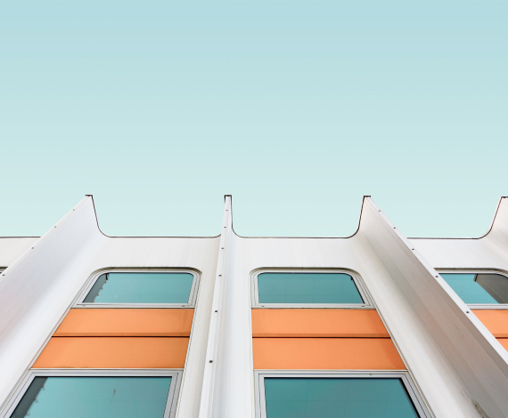
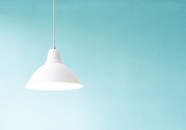
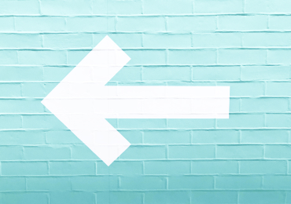
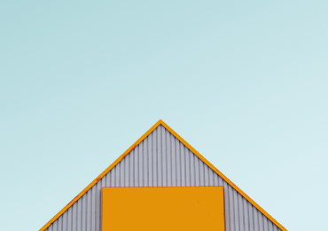
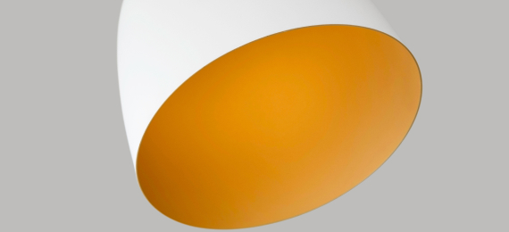
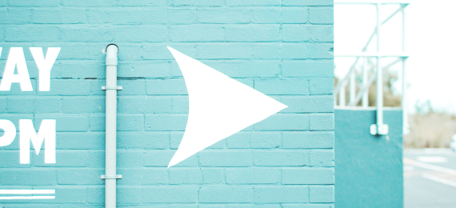

Manifest is a newborn theme. Clean, simple and fast.
Blog
Technology, Interface Design
Using UX Design to Build a Sustainable Future
6 May, 2020
Transformation has to be driven by everybody, not just by climate
groups, and we have a responsibility to use our influence to drive
this.
Technology, Interface Design
Using UX Design to Build a Sustainable Future
6 May, 2020
Transformation has to be driven by everybody, not just by climate
groups, and we have a responsibility to use our influence to drive
this.

Latest Posts

Interface Design
8 June, 2020
UX traffic light colours
UI has to make a huge visual difference between warning, an
alert and a success.

Technology
6 May, 2020
Using UX Design to Build a Sustainable Future
UI has to make a huge visual difference between warning, an
alert and a success.

Visual Design
8 June, 2020
Creativity vs. UX
Is it possible to create a delightful user experience without
following best UX practices?
The Most Popular

Interface Design
8 June, 2020
Mentorship Match — How a simple LinkedIn feature can boost
diversity
LinkedIn is on a clear mission to make professionals more
successful by connecting the global workforce and as we learned
— diversity and success go hand in hand

Visual Design
8 June, 2020
Creativity vs. UX
Is it possible to create a delightful user experience without
following best UX practices?
Full-time UI/UX designer
Head of Design at VeronaLabs.com
We work with clients around the world from our headquarters in
Charleston, South Carolina.
We focus on naming, branding, brand narratives, website design and
development, and brand experiences.